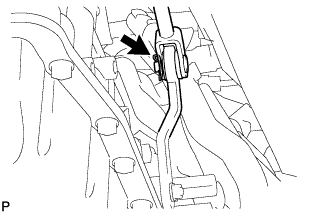
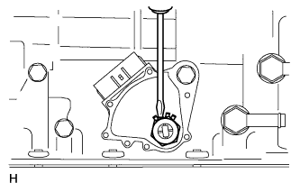
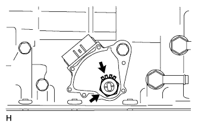
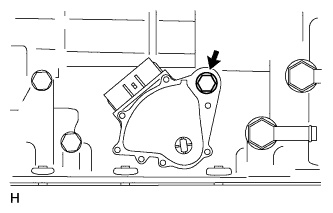

PARK / NEUTRAL POSITION SWITCH > REMOVAL |
| 1. DISCONNECT CABLE FROM NEGATIVE BATTERY TERMINAL |
| 2. DISCONNECT FLOOR SHIFT GEAR SHIFTING ROD SUB-ASSEMBLY |
 |
Remove the clip and pin, and disconnect the shifting rod from the transmission control shaft lever RH.
| 3. REMOVE PARK/NEUTRAL POSITION SWITCH ASSEMBLY |
Disconnect the switch connector.
 |
Remove the nut, spring washer and transmission control shaft lever RH.
Remove the collar and transmission control rod bush from the transmission control shaft lever RH.
 |
Using a screwdriver, bend the tabs of the lock washer.
 |
Remove the lock nut and lock washer.
 |
Remove the bolt and switch.